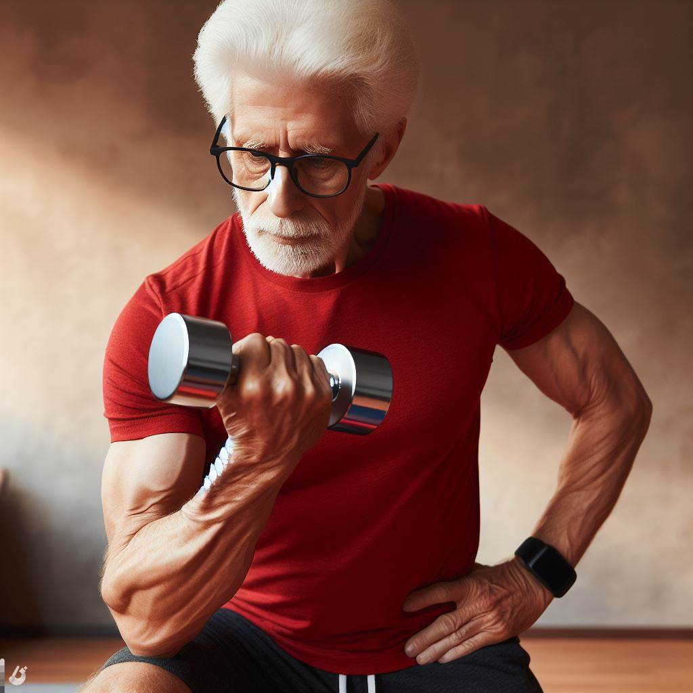

Benefícios da utilização de Halteres
A importância de utilizar halteres para exercício físicos
Os halteres são equipamentos simples, mas muito versáteis, que podem ser utilizados para realizar diversos tipos de exercícios físicos, tanto no solo quanto em aparelhos. Os halteres são formados por uma barra de metal com pesos nas extremidades,
que podem ser fixos ou ajustáveis, de acordo com a carga desejada.
Utilizar halteres
para exercício físicos traz inúmeros benefícios para a saúde, como:
- Melhora a força muscular: os halteres permitem trabalhar diferentes grupos musculares, como os braços, os ombros, o peito, as costas, o abdômen, as pernas e os glúteos. Os halteres também estimulam as fibras musculares de
contração rápida, que são responsáveis pela força explosiva e pela potência.
- Melhora a resistência muscular: os halteres possibilitam realizar exercícios com mais repetições e menos descanso, o que aumenta a resistência muscular e a capacidade aeróbica. Os halteres também estimulam as fibras musculares de
contração lenta, que são responsáveis pela resistência e pela recuperação.
- Melhora a definição muscular: os halteres ajudam a queimar gordura e a definir os músculos, dando um aspecto mais firme e tonificado ao corpo. Os halteres também aumentam o metabolismo basal, que é a quantidade de calorias que o corpo gasta em repouso,
o que favorece a perda de peso.
- Melhora a funcionalidade: os halteres permitem realizar exercícios que imitam os movimentos do dia a dia, como agachar, levantar, empurrar, puxar, girar, entre outros. Isso melhora a funcionalidade do corpo,
facilitando as atividades cotidianas e prevenindo lesões.
- Melhora a estabilidade: os halteres exigem que o corpo se equilibre e se estabilize durante os exercícios, o que melhora a postura, a coordenação, o equilíbrio e a propriocepção,
que é a capacidade de perceber a posição e o movimento do corpo no espaço.
- Melhora a saúde óssea: os halteres geram um estresse mecânico sobre os ossos, o que estimula a produção de células ósseas e a absorção de cálcio,
o que fortalece os ossos e previne a osteoporose.
- Melhora a saúde mental: os halteres promovem a liberação de hormônios como a endorfina, a serotonina e a dopamina, que melhoram o humor, a disposição, a autoestima e o bem-estar. Os halteres também reduzem o estresse, a ansiedade,
a depressão e a insônia, melhorando a qualidade do sono e da vida.
Portanto, utilizar halteres para exercício físicos é uma forma de cuidar da saúde em todos os aspectos,
de forma simples, prática e eficiente.
Os halteres podem ser usados por pessoas de todas as idades,
sexos, condições físicas e objetivos, pois os exercícios
podem ser adaptados às características e necessidades de cada um.
Como utilizar halteres para exercício físicos
Para utilizar halteres para exercício físicos,
é preciso seguir algumas recomendações, como:
- Escolher o peso adequado: o peso dos halteres deve ser escolhido de acordo com o nível de condicionamento físico, o tipo de exercício, o número de repetições e a intensidade desejada. O peso deve ser suficiente para gerar uma sobrecarga
muscular, mas não excessivo para causar dor, fadiga ou perda de forma.
- Aquecer antes de começar: o aquecimento é essencial para preparar o corpo para o exercício, aumentando a temperatura, a circulação e a lubrificação das articulações. O aquecimento pode ser feito com exercícios leves, como caminhada, corrida,
bicicleta, polichinelos, entre outros, por cerca de 10 minutos.
- Executar os exercícios corretamente: os exercícios devem ser executados com a postura adequada, o alinhamento correto, a respiração sincronizada e o controle do movimento, evitando balanços, trancos ou compensações. Os exercícios devem ser feitos com atenção, concentração e consciência corporal,
seguindo as orientações de um profissional qualificado.
- Variar os exercícios: os exercícios devem ser variados periodicamente, para evitar a adaptação muscular, o tédio e a estagnação. Os exercícios podem ser variados mudando o peso, o número de repetições, a velocidade, a amplitude, a ordem, o intervalo,
a posição, o plano, o ângulo, o equipamento, entre outros fatores.
- Descansar entre os exercícios: o descanso é importante para recuperar o músculo, o sistema nervoso e o sistema cardiovascular, além de prevenir o acúmulo de ácido lático, que causa a fadiga e a dor muscular. O descanso deve ser proporcional à intensidade do exercício,
podendo variar de 30 segundos a 3 minutos, dependendo do objetivo.
- Alongar após terminar: o alongamento é fundamental para relaxar o músculo, aliviar a tensão, melhorar a flexibilidade, prevenir lesões e melhorar a recuperação. O alongamento deve ser feito com calma, respeitando os limites do corpo, sem forçar ou sentir dor. O alongamento deve ser feito por cerca de 10 minutos,
abrangendo todos os grupos musculares trabalhados.
